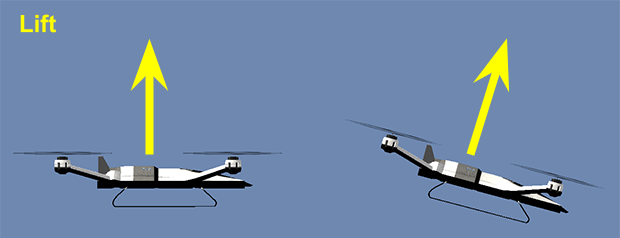
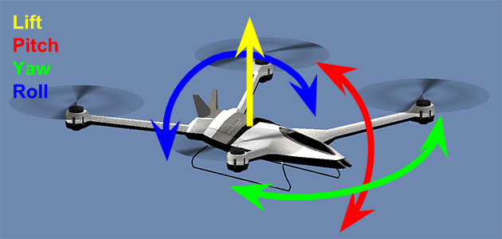
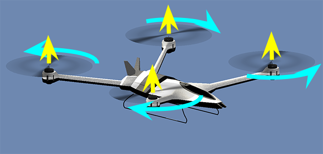

Introduction
Quad-copters are growing common today. We are always reading or watching videos on new models, parts, technologies and several awesome skilled pilot acrobatics.
Including on those videos and news, there are the "drone races". several "drone" racing adept gather together to put their own machines on trial. Most of us can only watch and admire the show. Even due expenses in building and repairing a drone or due lack of skill or time in training to become a pilot. That's where video-games may fit in.
As every real-world based game we have a small portion of that reality being simulated in the game. Quad-copters are not exception. The idea in this project is to implement a virtual controlled quad-copter adapted to be used in games. We have to start from understanding the basic quad-copter concepts and bring them to a game reality.
About the project
There is a commercial game that uses the exactly concept I'm showing here. It's the Drone Battleground. the idea is to implement a multiplayer battleground where drone teams can play a "capture the flag" game. However, We'll be working on a Unity 5 project with no external assets to serve as guide/example. The project can be found on the current stage here at this Github repository. It's recommended that you know basics on Unity and C# for a better understanding on this documents.
Drone physics
A real drone depends on several elements acting together to make it lift, move and fly. Those elements involves lots of aerodynamics and mechanics study. That's not the idea in this project. We are going to take things simple here. Simple in a form that still look likes a drone control but easy enough to be applied in a game without make it hard for both players and developers
First of all, lets understand the movements and forces involved in making a drone fly. There are four different movements a drone can perform. The combination of them make the other maneuvers possible. The first movement is a translation, the other three are rotations around a certain axis of the vehicle:
- Lift / Fall: This is basically the vertical movement. Increase each motor power and the drone gains altitude, decrease and the gravity pulls it down. We have to keep in mind that lift depends on the drone level. This is exactly what will allow us to make them to move sideways and forward/backward;

- Pitch: As every Unity object. Pitch represents the rotation around the X axis. It's caused, in quad copters, by applying different powers between front and rear motors;
- Roll: Once again, based on Unity, this represents the rotation around the Z axis. It's caused, in quad copters, by applying different powers between left and right motors;
- Yaw: This is the Y axis rotation. This particular rotation is challenging to be done in quad-copters because it depends on the torque reaction on clockwise and counter-clockwise motors. Fortunately, as we shall see later on, there is an easy way to simulate it in Unity with almost no calculations.

To achieve each movement, there are four motors (for quad-copters). Each one has its rotation direction and propeller pitch. The combination of them, when applied the same power will lift the quad-copter straight up. By varying the power on each motor we force the quad-copter to perform any of the rotation movements.

Implementation plan
Despite several complex calculations necessary to make a real drone fly, in a simulated environment, specially a game, all we have to keep in mind are the forces involved. Basically, for this first part, we'll scratch a script that apply forces on every motor position. Those forces will vary according to the input axis.